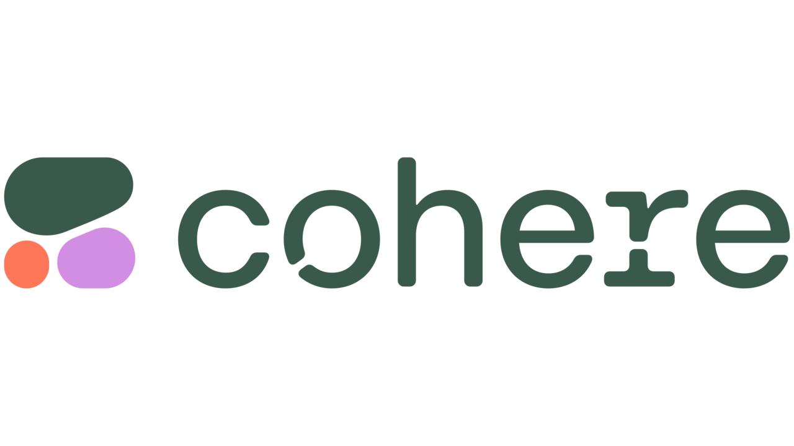

홈 > 브랜드 매거진 > 뱅크샐러드
뱅크샐러드 Banksalad
흩어진 내 금융 데이터를 한곳에 모은 자산관리 앱
산업 분야 기술·전자 · 공개 등급 자료 기반 · 브랜드 평가 4 ★

한눈에 보는 브랜드
김태훈 창업주가 설립한 레이니스트(Rainist)는 여러 은행·카드·보험사에 흩어진 개인 금융 정보를 한 앱에서 조회할 수 있는 서비스 뱅크샐러드를 선보였다. 신용카드 추천 등 금융 콘텐츠 서비스로 출발해 이후 자산관리 앱으로 발전했다.
정부의 마이데이터 제도가 도입되면서 뱅크샐러드는 초기 마이데이터 사업자 중 하나로 선정되어 서비스를 고도화했다.
브랜드 아이덴티티
금융기관별로 폐쇄적이던 개인 데이터를 소비자 관점에서 통합하는 마이데이터 개념을 제도화 이전부터 선제적으로 구현한 사례로, 규제 변화(마이데이터 법제화)와 서비스 혁신이 맞물린 구조적 사례다. 금융 데이터 통합 조회 서비스로 확보한 이용자 기반을 마이데이터 라이선스를 통한 맞춤형 자산관리·추천 서비스로 고도화하는 것이 핵심 성장 축이다.
타임라인
BI/CI 변천사
대표 로고대표 브랜드 마크자주 묻는 질문
뱅크샐러드의 브랜드 아이덴티티는 무엇인가요?
금융기관별로 폐쇄적이던 개인 데이터를 소비자 관점에서 통합하는 마이데이터 개념을 제도화 이전부터 선제적으로 구현한 사례로, 규제 변화(마이데이터 법제화)와 서비스 혁신이 맞물린 구조적 사례다.
함께 읽을 브랜드
Pi
Pigment AI
기술·전자 · 편집 검수Pigment AIPigment AI는 2025년에 기록된 AI Brands 계열의 브랜드 아이덴티티 사례입니다. Fiasco가 아이덴티티 작업의 디자이너로 기록되어 있습니다. 공개...
기술·전자 · 편집 검수SwissairSwissair는 1978년에 기록된 Airlines 계열의 브랜드 아이덴티티 사례입니다. Karl Gerstner가 아이덴티티 작업의 디자이너로 기록되어 있습니다....
 기술·전자 · 자료 기반리디(RIDI)
기술·전자 · 자료 기반리디(RIDI)전자책에서 웹소설·웹툰으로 확장한 콘텐츠 플랫폼
인텔은 보이지 않는 부품을 소비자가 인식하는 브랜드로 만든 대표적 사례다. 컴퓨터 내부의 기술을 밖으로 끌어내어 신뢰와 성능의 이름으로 각인시킨 점이 인텔 브랜딩의...
 기술·전자 · 편집 검수British Rail
기술·전자 · 편집 검수British RailBritish Rail는 1969년에 기록된 Historical 계열의 브랜드 아이덴티티 사례입니다. Design Research Unit, Gerald Barney...
Cl
Club Pescine
기술·전자 · 편집 검수Club PescineClub Pescine는 2025년에 기록된 Retail 계열의 브랜드 아이덴티티 사례입니다. Caserne가 아이덴티티 작업의 디자이너로 기록되어 있습니다. 공개...

기술·전자 · 편집 검수CohereCohere는 2023년에 기록된 Technology 계열의 브랜드 아이덴티티 사례입니다. Pentagram가 아이덴티티 작업의 디자이너로 기록되어 있습니다. 공개...
 기술·전자 · 편집 검수Delta
기술·전자 · 편집 검수DeltaDelta는 2000년에 기록된 Airlines 계열의 브랜드 아이덴티티 사례입니다. Landor가 아이덴티티 작업의 디자이너로 기록되어 있습니다. 공개 섹션 정보는...